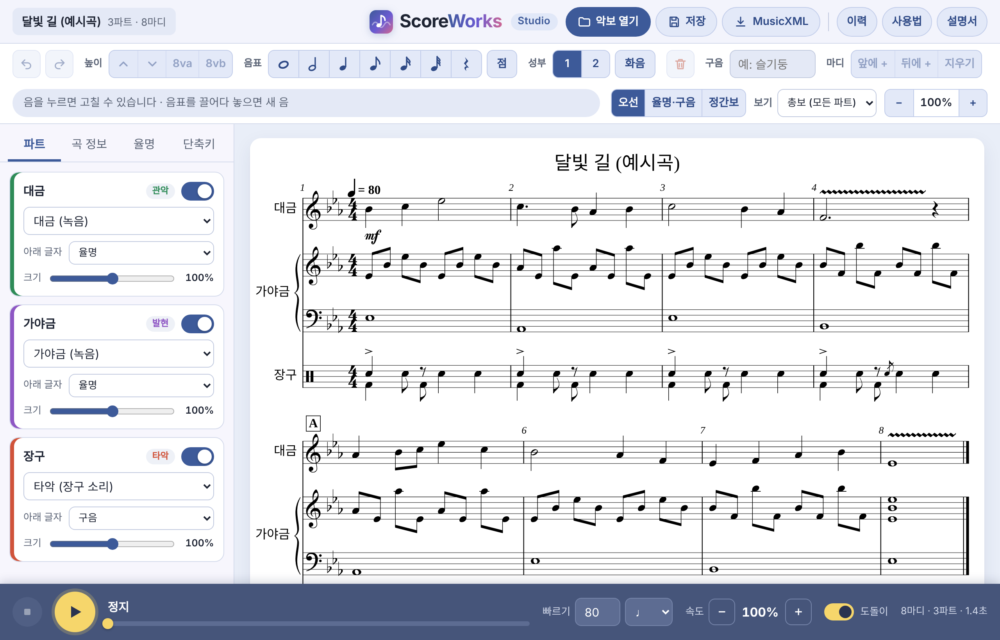
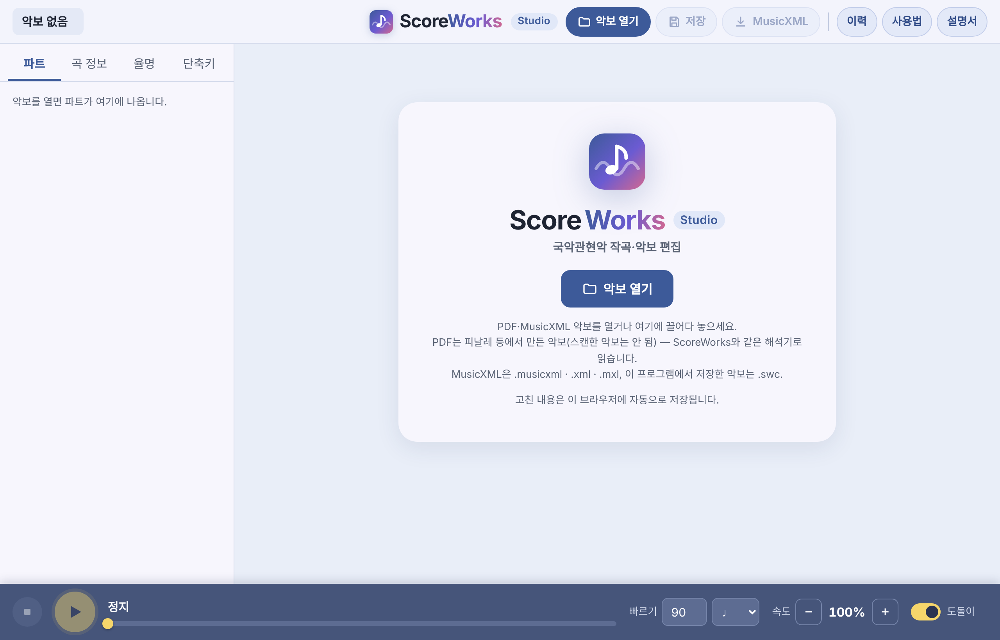
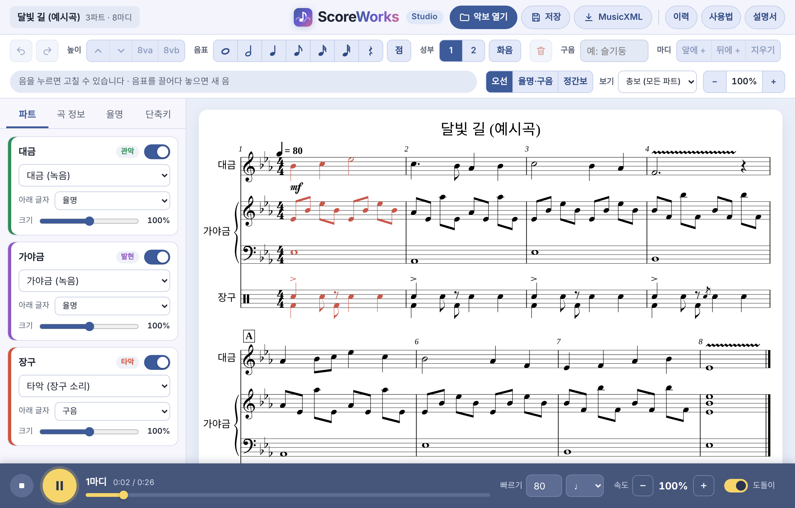
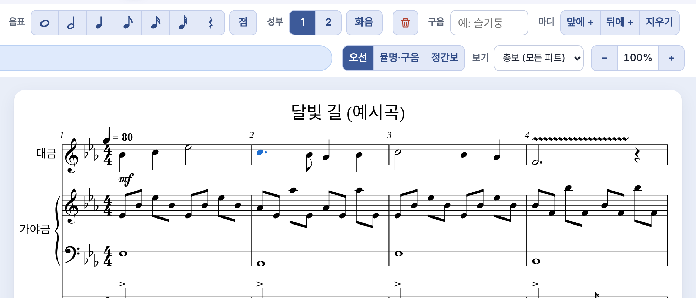
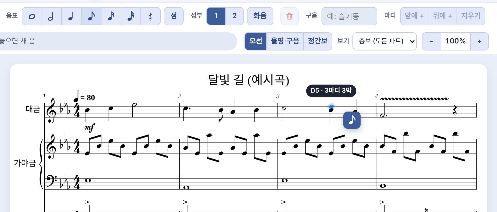
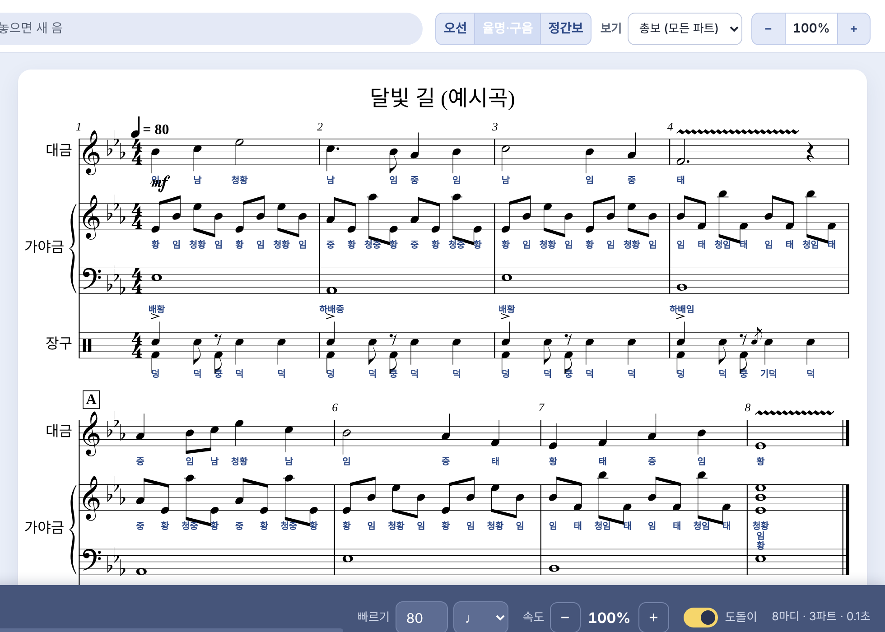
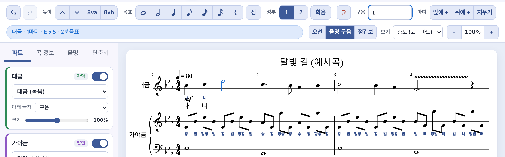
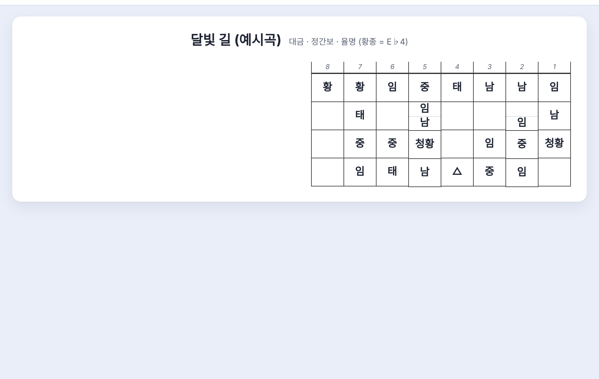
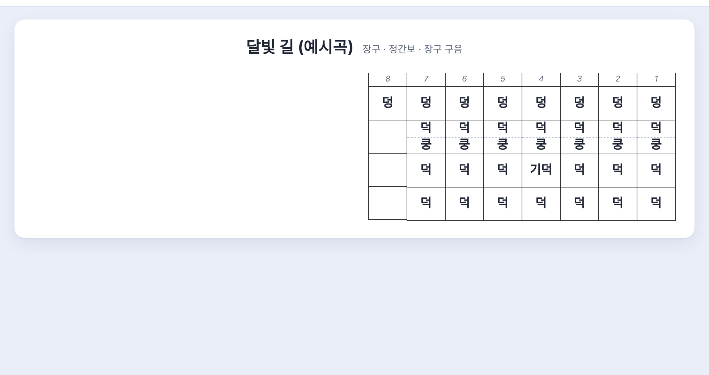
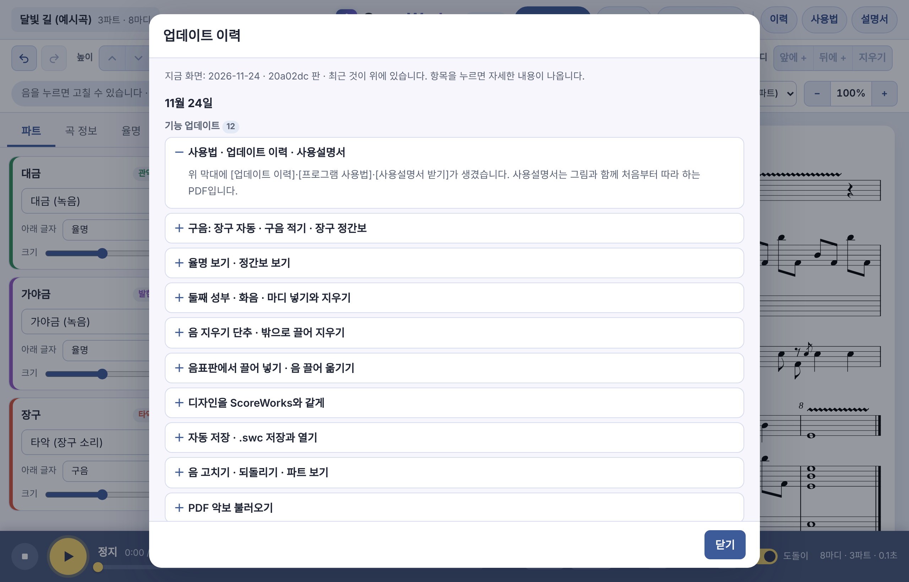

악보 PDF나 MusicXML을 열어 오선보로 보고, 국악기 녹음으로 들으며 음을 고치고 넣습니다. 율명·구음을 붙여 보거나 정간보로 바꿔 볼 수 있고, 고친 악보는 피날레·뮤즈스코어에서 여는 MusicXML로 저장합니다.
컴퓨터·아이패드의 크롬·엣지·사파리·삼성 인터넷에서 commst.github.io/scoreworks_studio 를 엽니다. 설치할 것은 없습니다. 처음 여는 악보는 악보 그리는 프로그램과 국악기 녹음을 받느라 몇 초 걸립니다.
ScoreWorks와 무엇이 다른가요? ScoreWorks는 악보 PDF를 읽어 연습용으로 들려주는 도구이고, Studio는 악보를 고치고 새로 쓰는 도구입니다. PDF 해석기와 국악기 녹음은 둘이 같아서, 같은 악보는 같은 소리로 들립니다.

| 자리 | 하는 일 |
|---|---|
| 위 막대 | 왼쪽 곡 이름(누르면 악보 열기), 가운데 이름, 오른쪽 악보 열기 저장 MusicXML 이력 사용법 설명서 |
| 편집 막대 | 되돌리기·다시, 높이, 음표판, 점, 성부, 화음, 지우기, 구음 칸, 마디, 고른 음 안내, 보기 방식(오선·율명·구음·정간보), 보기(총보·파트 하나), 크기 |
| 왼쪽 칸 | 파트 소리·글자·크기 · 곡 정보 제목·마디 수·해석을 확인할 곳 · 율명 황종 기준 등 · 단축키 |
| 연주 막대 | 정지·재생, 지금 마디와 시간, 진행 막대, 빠르기, 속도, 도돌이 |
화면이 좁으면 위 막대 단추는 아이콘이나 짧은 이름(이력·사용법·설명서)으로 바뀌고, 휴대폰 폭에서는 왼쪽 칸을 숨깁니다.

PDF에서 알아 둘 점 PDF는 ScoreWorks와 같은 해석기로 읽습니다. 스캔하거나 사진으로 만든 PDF는 읽지 못합니다. 드물게 음이나 박을 잘못 읽은 곳은 왼쪽 곡 정보의 '해석을 확인할 곳'에 마디 번호와 함께 나오니, 그 마디를 보고 고치세요.
가야금처럼 두 오선(윗줄·아랫줄)으로 된 악기는 한 파트로 합쳐 보여 줍니다. 파트 하나만 볼 때는 쉬는 마디가 이어지면 여러 마디 쉼표로 묶어 보여 줍니다.

파트마다 스위치로 소리를 켜고 끄며, 악기 소리와 크기(0~200%)를 고릅니다. 악기 소리는 파트 이름으로 미리 골라 둡니다(대금 → 대금 녹음, 장구 → 장구 소리).
이렇게 써 보세요 내 파트만 끄고 나머지를 켜면 반주에 맞춰 연습할 수 있고, 내 파트 크기를 150%로 올리면 내 소리가 잘 들립니다.

고치면 쉼표·붙임줄·잇단음표·빔을 그 마디에 맞게 다시 정리하고, 임시표는 조표와 마디 앞 음을 보고 붙입니다. 고친 마디가 든 부분만 다시 그려서 큰 총보도 빠릅니다. '보기'에서 파트 하나만 보면 더 빠릅니다.

편집 막대 음표판(온음표·2분·4분·8분·16분·32분음표·쉼표)의 단추를 끌어다 악보에 놓으면 그 자리에 새 음이 들어갑니다. 자리는 8분음표 단위(더 짧은 음은 그 길이 단위)로 맞춰지고, 그 자리에서 시작하던 음은 지워지며 앞에서 걸쳐 오던 음은 새 음 앞에서 잘립니다.
| 단추 | 하는 일 |
|---|---|
| 성부 1 · 2 | 새 음을 넣을 성부. 2를 고르면 첫 성부 음은 그대로 두고 둘째 성부(꼬리 아래)에 넣습니다. |
| 화음 | 켜면 넣는 음을 그 자리 음에 화음으로 더합니다. Shift를 누른 채 놓아도 같습니다. 고른 음에서 Shift+C~B는 맨 위 음 위로 그 음을 더합니다. |
| 마디 앞에 + / 뒤에 + | 고른 음이 있는 마디 앞·뒤에 빈 마디(그 자리 박자, 모든 파트 온쉼표)를 넣습니다. |
| 마디 지우기 | 고른 음이 있는 마디를 모든 파트에서 지웁니다. 그 마디에서 박자·조·빠르기가 바뀌었다면 다음 마디로 넘겨 줍니다. |
마디를 넣거나 지우면 마디 번호를 처음부터 차례로 다시 매깁니다.

편집 막대 오른쪽의 율명·구음을 고르면 오선 아래에 글자가 붙습니다. 파트마다 파트 칸의 '아래 글자'에서 율명 · 구음 · 없음을 고릅니다. 기본은 선율 악기 = 율명, 장구 = 구음입니다.
소리 나는 높이를 12율(황·대·태·협·고·중·유·임·이·남·무·응)로 적고, 옥타브는 하배 · 배 · (가운데) · 청 · 중청으로 붙입니다. 화음은 높은 음이 위, 붙임줄로 이어진 뒤 음은 빼고 적습니다.
황종 기준 기본은 정악(향악) 기준인 E♭4입니다. 아악·당악 계통은 C에 가깝고, 곡이나 단체마다 다를 수 있으니 율명 칸에서 맞춰 고르세요(C4 · D4 · E♭4 · F4 · A♭4 · B♭4).
같은 시각에 친 것을 묶어 붙입니다 — 채편과 북편을 함께 = 덩, 채편 = 덕, 북편 = 쿵, 꾸밈음 + 채편 = 기덕, 채편 트레몰로 = 더러러러. 첫 성부(또는 위쪽 줄)를 채편, 둘째 성부(아래쪽 줄)를 북편으로 봅니다.

거문고·피리의 구음은 같은 높이라도 줄·괘·가락에 따라 달라져 자동으로 붙이지 않습니다. 적은 구음은 MusicXML에 가사로 저장되어 피날레에서도 음 아래 글자로 보입니다. 산조가야금 12현을 쓰는 곡은 율명 칸에서 가야금을 '산조가야금 12현'으로 바꾸면 줄 구음(청·흥·둥·당·동·징·땅·지·찡·칭·쫑·쨍)이 자동으로 붙습니다.


| 방법 | 무엇이 저장되나 |
|---|---|
| 자동 저장 | 열거나 고칠 때마다 이 브라우저에 저장. 다음에 열면 첫 화면에 '이어서 열기 — 제목 · 고친 시각'. |
| 저장 (Ctrl+S) | 이 프로그램의 악보 파일 .swc — 악보와 파트별 소리·크기·켜기·아래 글자·보기 설정. 다른 기기로 옮기거나 보관할 때. |
| MusicXML | 피날레·뮤즈스코어·시벨리우스에서 여는 .musicxml — 고친 음, 임시표, 붙임줄, 구음(가사). |
자동 저장은 그 브라우저 안에만 있습니다. 브라우저 기록을 지우거나 다른 기기에서 열면 없으니, 중요한 악보는 저장으로 .swc 파일을 받아 두세요.
| 키 | 하는 일 |
|---|---|
| Space | 재생 · 멈춤 |
| ← → | 앞 · 뒤 음 고르기 |
| ↑ ↓ / Ctrl+↑↓ | 반음 / 옥타브 |
| C~B / Shift+C~B | 그 음으로 / 화음으로 더하기 |
| 1~7, . | 길이(64분 · 32분 · 16분 · 8분 · 4분 · 2분 · 온음표), 점 |
| Delete | 지우기(쉼표로) |
| Ctrl+Z / Y | 되돌리기 / 다시 |
| Ctrl+S | 저장(.swc) |
| Esc | 선택 풀기 · 넣기 상태 끝내기 · 창 닫기 |
위 막대의 사용법은 이 설명서의 요약을 화면에서 보여 주고, 이력은 날짜별로 새로 생긴 기능과 고친 문제를 보여 줍니다(항목을 누르면 자세한 내용). 설명서는 이 PDF를 받습니다.
